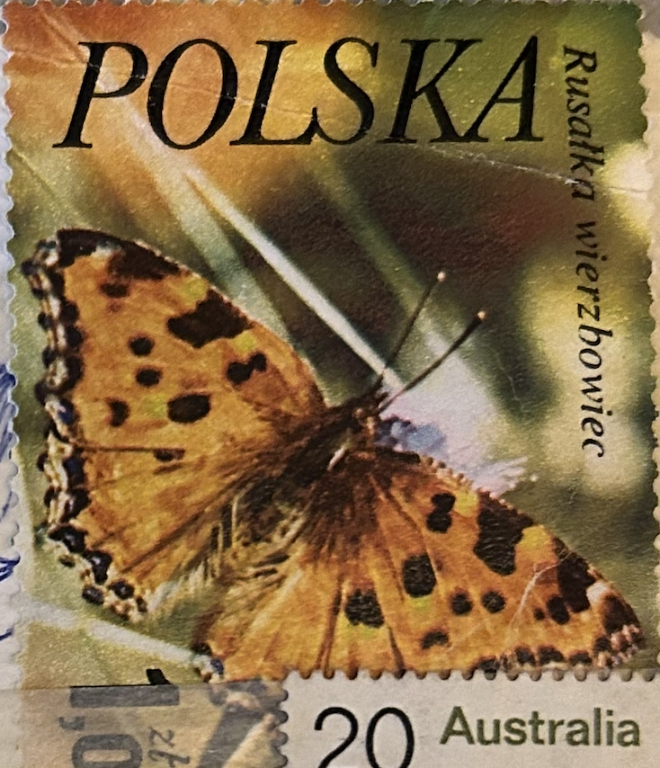
| SOURCE | TITLE| IMAGE MATCH | click to source page |
| eBay | Poland 2228 used Butterflies | eBay | 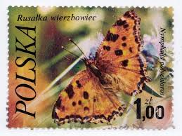 |
| Flickr | Vals ATCs | Flickr | 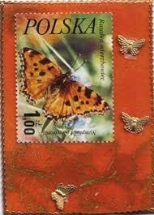 |
| iStock | Polish Set Of Stamps Butterfly Stock Photo - Download Image Now - Antique, Butterfly - Insect, Cancellation - iStock | 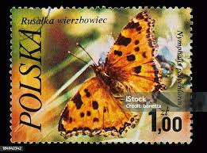 |
| Find Your Stamps Value | Value of polska butterfly stamps | 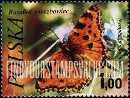 |
| eBay UK | POLSKA NYMPHALIS POLYCHLOROS BUTTERFLY STAMP 1,00 ZT FINE CONDITION | eBay UK | 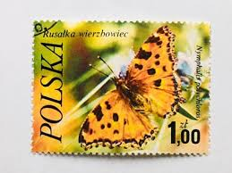 |
| Shutterstock | Saint Petersburg Russia 06 March 2019 Stock Photo 1347914672 | Shutterstock | 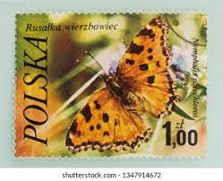 |
| HipStamp | Poland Stamp:1977 Colorful-Beautiful-Lovely Butterfly Used-Large Size Stamps | Europe - Poland, Stamp / HipStamp | 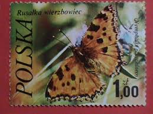 |
| eBay | Insects Polish Stamps for sale | eBay | 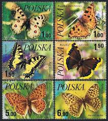 |
| Alamy | Large tortoiseshell nymphalis polychloros hi-res stock photography and images - Alamy | 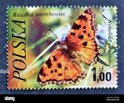 |
| Colnect | Stamp: Large Tortoiseshell (Nymphalis polychloros) (Poland(Butterflies (1977)) Mi:PL 2517,Sn:PL 2228,Yt:PL 2346,Sg:PL 2504,AFA:PL 2403,Pol:PL 2370 📮 | 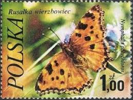 |
| Stamp Community Forum | Everything's Coming Up Butterflies! - Page 15 - Stamp Community Forum | 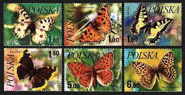 |
| Wikipedia | Nymphalis - Wikipedia | 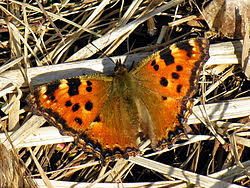 |
| iNaturalist | Large Tortoiseshell (Nymphalis polychloros) · iNaturalist | 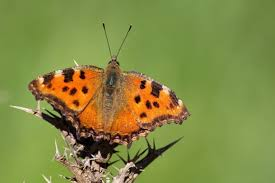 |
| Daily Mail | Giant butterfly thought to be extinct in Britain since 1960s has been found | Daily Mail Online | 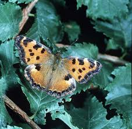 |
| Dorset Butterflies | Large Tortoiseshell | Dorset Butterflies | 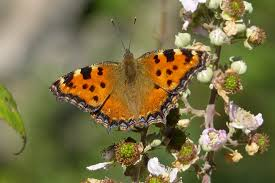 |
| First Nature | Large Tortoiseshell, Nymphalis polychloros, identification guide | 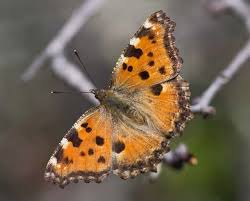 |
| eBay | Butterflies Omani Stamps for sale | eBay | 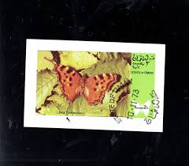 |
| from the turn of 2.and 3. decade 03/2025 South Bohemia -CZ🇨🇿 some of next Nymphalidae from our region🙂 | 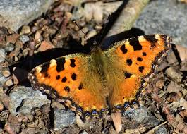 | |
| Found this butterfly : r/Butterflies | 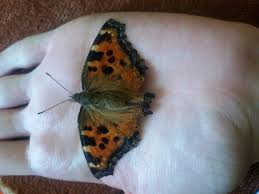 | |
| eBay | 1977 POLAND BUTTERFLY USED STAMPS | eBay | 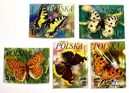 |
| I've been asked by several people as to whether I think the Large Tortoiseshells are the offspring of migrants, captive breeding, or just general releases. Whilst it's impossible to answer this question | 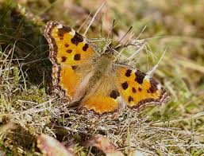 | |
| Friends of Rowley Hills | Butterflies & moths | Friends of Rowley Hills | 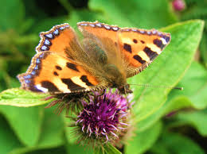 |
| Dreamstime.com | Nymphalis Polychloros the Large Tortoiseshell Beautiful Butterfly Which Lays the Eggs in Fruit Trees Can Become a Plague for Them Stock Image - Image of black, family: 189016069 | 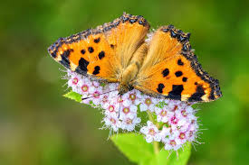 |
| This year's new generation of Large Tortoiseshells (*Nymphalis polychloros)* are now beginning to emerge. Here is an immaculate female, hunkering down to avoid the strong winds of today. | 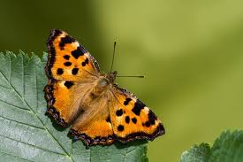 | |
| Went back to Chard Junction today to try for some better Orange Tip pics -I watched a butterfly fight with a peacock and it was a similar size- I waited and it | 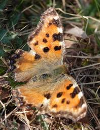 | |
| Blogger.com | Book Review - Britain's Butterflies - Princeton University Press (WILDGuides of Britain & Europe) - Travels With Birds | 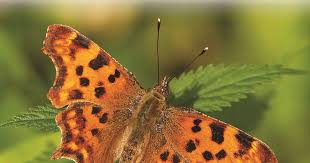 |
| ResearchGate | Explanation of colour plate I: Figs. 1, 2, 3: Thaumantis hainana... | Download Scientific Diagram | 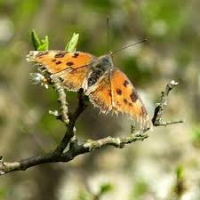 |
| Large Tortoiseshell at Les Raies, St Saviour's Guernsey, this morning. | 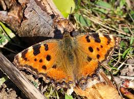 | |
| Free | Large Tortoiseshell (Nymphalis polychloros) | 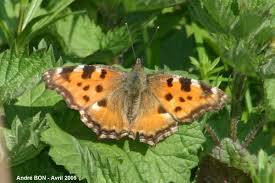 |
| What is the identity of this butterfly species? | 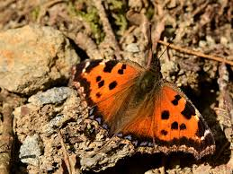 | |
| Alamy | Grote vos / Large Tortoiseshell (Nymphalis polychloros Stock Photo - Alamy | 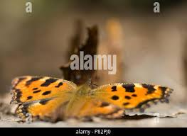 |
| PBase.com | Butterflies and Moths of Öland Photo Gallery by Ivan Kruys at pbase.com | 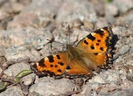 |
| eBay | Марки бабочки Омани - огромный выбор по лучшим ценам | eBay | 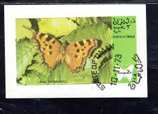 |
| Officially extinct butterfly 'making a comeback' in UK : r/unitedkingdom | 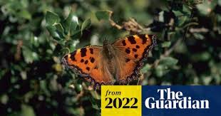 | |
| Finally got a photo of a Large Tortoishell.. Saw 3 yesterday. | 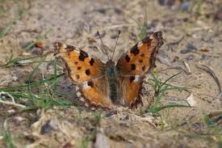 | |
| What are these two Small Tortoiseshells up to I wonder? I would have thought they would be back end to back end if mating ... Or is my butterfly anatomy awry? 24th | 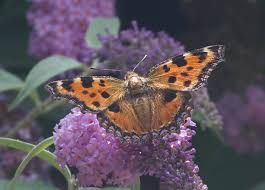 | |
| The other target species for our weekend in Dingle was Portland Moth. There is something peculiar going on with this species. It appears to have been lost from many of its previous | 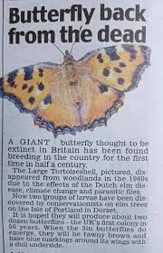 | |
| Bumblebee.org | Butterflies in the Nymphalidae family 1 | 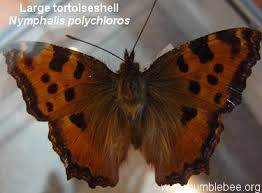 |
| YouTube | YouTube | 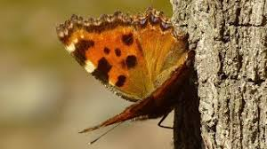 |
| d-e-zimmer.de | Page 29 - "M-O" - Guide | 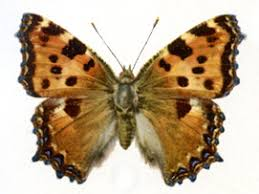 |
| The Guardian | The beautiful madness of the butterflies' dance | Butterflies | The Guardian | 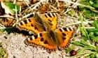 |
| Adobe | Butterfly Nymphalis Polychloros, Multicolored Nymph, Photographed in Sardinia Stock Photo | Adobe Stock | 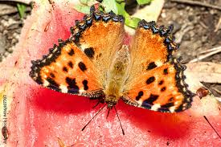 |
| LuontoPortti | Large Tortoiseshell, Nymphalis polychloros - Butterflies - NatureGate | 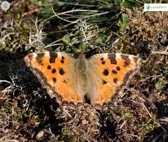 |
| irfandemirel.com | Tagged with Karaağaç Nimfalisi Kelebeği - FoToNoTe | 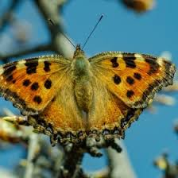 |
| Nature Today | Nature Today | Zeldzame vlinder duikt op in Kempen~Broek: de grote vos | 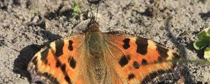 |
| Flickr | ANYTHING & EVERYTHING PHOTOGRAPHIC / NO SL/AI | Flickr | 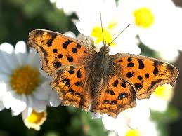 |
| WordPress.com | The Nemesis Bird | On the Wing | 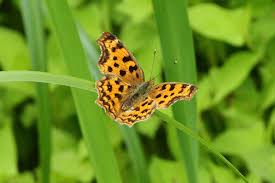 |
| Flickr | Tortoise Shell | Last Flight of the Day | Zak Hughen | Flickr | 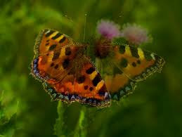 |
| Nymphalis polychloros. A pristine individual from the Summer generation. Madrid (Spain) 07/2022. 1300m. asl. No sharpen filters. Zoom in for higher resolution | 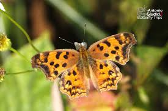 | |
| Quick tot up for 2025, 28 so far, unheard of for me this early in the season! | ||
| LuontoPortti | Yellow-legged Tortoiseshell, Nymphalis xanthomelas - Butterflies - NatureGate | |
| SoundCloud | Stream jebf MOTYL music | Listen to songs, albums, playlists for free on SoundCloud | |
| Blogger.com | Wildwings and Wanderings: Highlights of 2018: July | |
| Devon Butterflies | Clouded Yellow | |
| Aberdeen City Council | Prehistoric Animals: Cynognathus – Works – eMuseum | |
| eBay | 119274] Poland 1977 Insects butterflies schmetterlingen papillons MNH | eBay | |
| Flickr | veliki koprivar | veliki koprivar (nymphalis polychloros). | Milan Duniskvarić | Flickr | |
| eBay | W OMAN STATE ST 020A BUTTERFLIES SOUVENIR SHEET | eBay | |
| Cornwall Butterfly Conservation | Winter Newsletter No 42 |